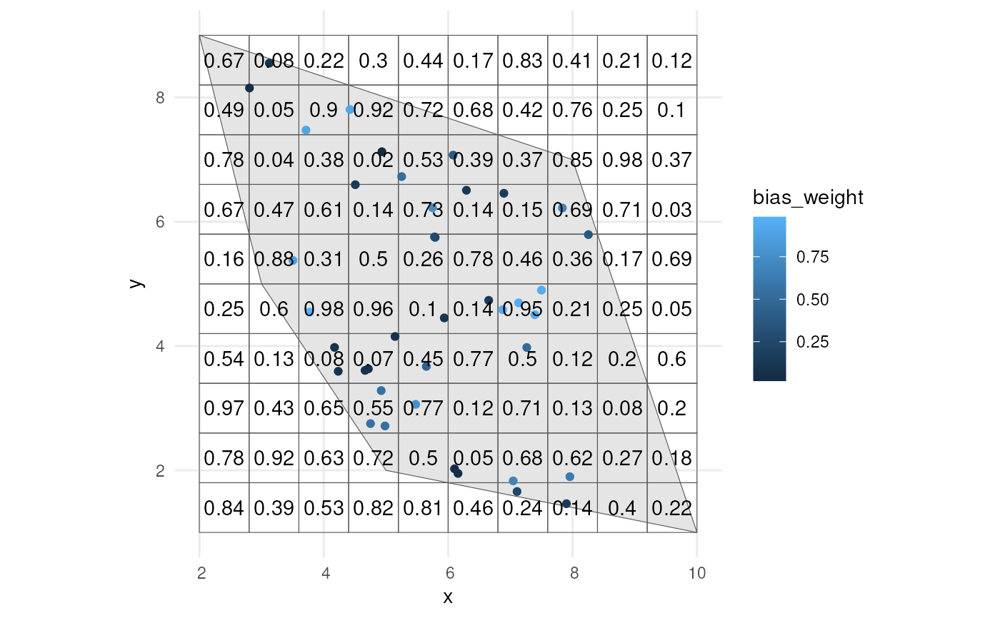

Apply manual sampling bias to occurrences via a grid
Source:R/apply_manual_sampling_bias.R
apply_manual_sampling_bias.RdThis function adds a sampling bias weight column to an sf object containing occurrences. The sampling probabilities are based on bias weights within each cell of a provided grid layer.
Arguments
- occurrences_sf
An sf object with POINT geometry representing the occurrences.
- bias_weights
An
sfobject with POLYGON geometry representing the grid with bias weights. This sf object should contain abias_weightcolumn and ageometrycolumn. Higher weights indicate a higher probability of sampling. Weights must be numeric values between 0 and 1 or positive integers, which will be rescaled to values between 0 and 1.
Value
An sf object with POINT geometry that includes a bias_weight
column containing the sampling probabilities based on the sampling bias.
See also
Other detection:
apply_polygon_sampling_bias()
Examples
# Load packages
library(sf)
#> Linking to GEOS 3.12.1, GDAL 3.8.4, PROJ 9.4.0; sf_use_s2() is TRUE
library(dplyr)
#>
#> Attaching package: ‘dplyr’
#> The following objects are masked from ‘package:stats’:
#>
#> filter, lag
#> The following objects are masked from ‘package:base’:
#>
#> intersect, setdiff, setequal, union
library(ggplot2)
# Create polygon
plgn <- st_polygon(list(cbind(c(5, 10, 8, 2, 3, 5), c(2, 1, 7, 9, 5, 2))))
# Get occurrence points
occurrences_sf <- simulate_occurrences(plgn)
#> [using unconditional Gaussian simulation]
# Create grid with bias weights
grid <- st_make_grid(
plgn,
n = c(10, 10),
square = TRUE) %>%
st_sf()
grid$bias_weight <- runif(nrow(grid), min = 0, max = 1)
# Calculate occurrence bias
occurrence_bias <- apply_manual_sampling_bias(occurrences_sf, grid)
occurrence_bias
#> Simple feature collection with 32 features and 3 fields
#> Geometry type: POINT
#> Dimension: XY
#> Bounding box: xmin: 2.608597 ymin: 1.500189 xmax: 9.700949 ymax: 8.662383
#> CRS: NA
#> First 10 features:
#> time_point sampling_p1 bias_weight geometry
#> 24 1 0.5803610 0.4212345 POINT (8.62278 1.500189)
#> 11 1 0.4470324 0.9998340 POINT (9.700949 1.557037)
#> 30 1 0.9976994 0.7985516 POINT (7.259084 2.571956)
#> 4 1 0.8868568 0.6641659 POINT (7.990637 1.90122)
#> 31 1 0.8853797 0.6641659 POINT (8.206332 1.997754)
#> 13 1 0.7385367 0.8321967 POINT (8.577629 1.94152)
#> 25 1 0.9993741 0.3226733 POINT (9.315453 1.811303)
#> 2 1 0.6696007 0.3915279 POINT (6.044068 2.804665)
#> 14 1 0.9832881 0.3915279 POINT (6.70267 3.335745)
#> 23 1 0.7326365 0.2751708 POINT (7.802674 3.113804)
# Visualise where the bias is
ggplot() +
geom_sf(data = plgn) +
geom_sf(data = grid, alpha = 0) +
geom_sf(data = occurrence_bias, aes(colour = bias_weight)) +
geom_sf_text(data = grid, aes(label = round(bias_weight, 2))) +
theme_minimal()
